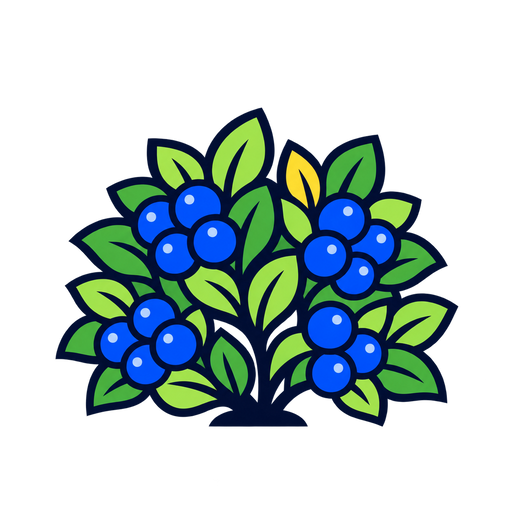
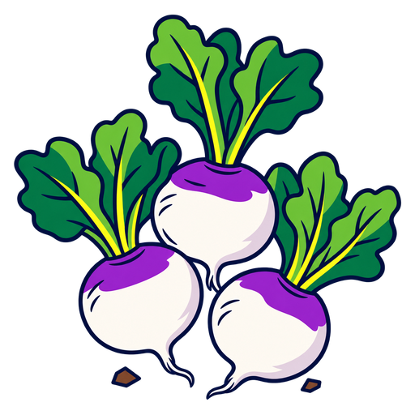

HedgerowSquare cards
Same artwork, two layouts at an approximate phone tableau size. These are studies, not playable cards.
01
Art led
The current idea: a full square image with the card name at the foot.

Turnip Crop02
Graphic frame
A speculative layout drawn from the references' bold bands, rhythm and compact labels.
FOREST
FIELD
HOME